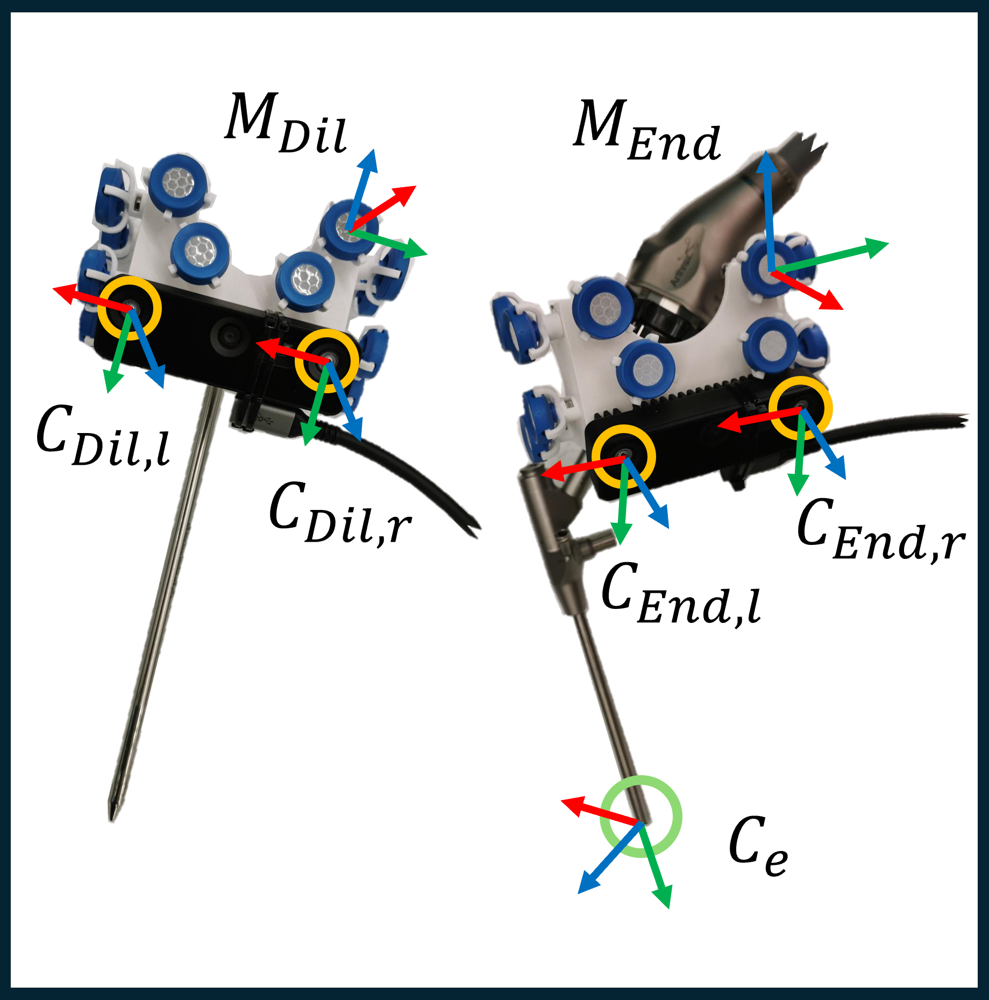
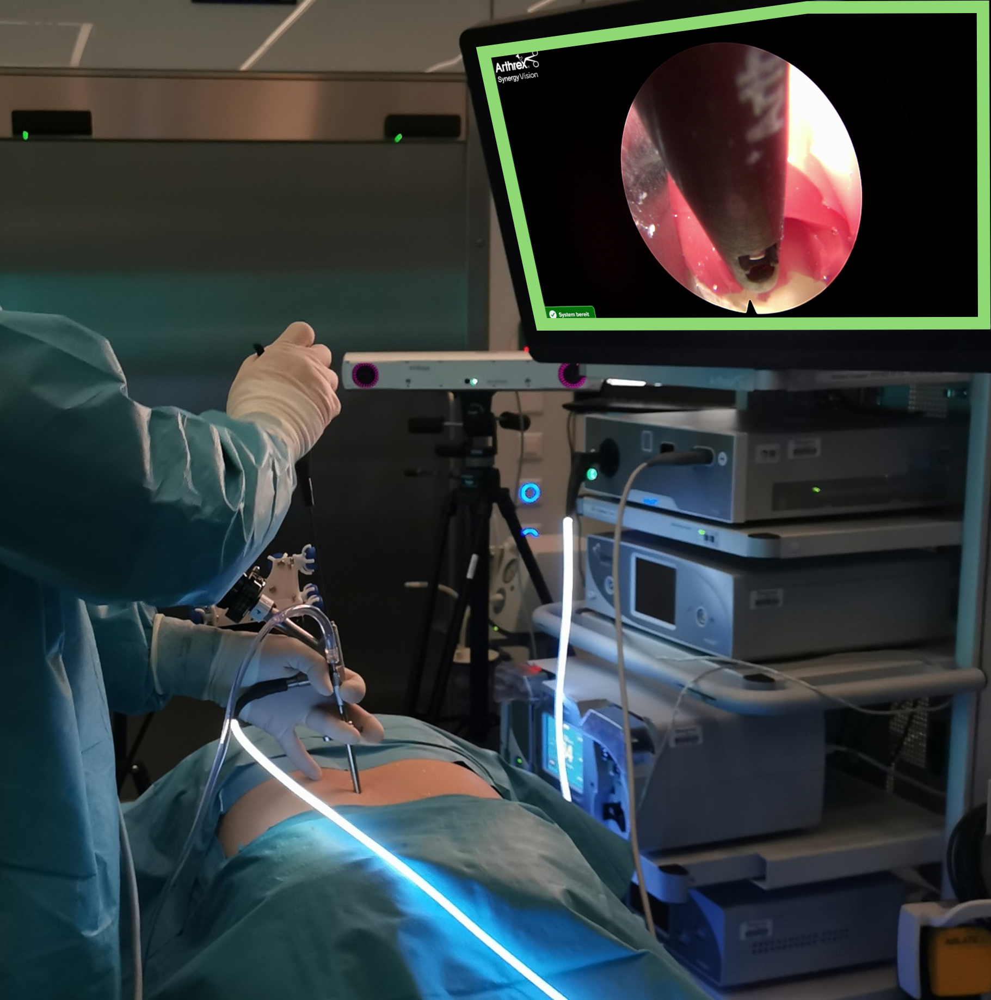

An endoscopic spine surgery dataset with mm-accurate tool poses, tool-mounted stereo cameras, and endoscopic video.
Purpose: Markerless inside-out surgical instrument tracking using a tool- mounted camera offers a promising solution to the limited clinical adoption of the existing navigation systems, which primarily rely on outside-in optical tracking and are constrained by line-of-sight issues. However, its performance in the surgical environment, with its unique challenges, remains largely unexplored. This work benchmarks state-of-the-art inside-out methods, namely, visual Simultaneous Localization and Mapping (vSLAM) methods. To this end, we collected a first-of-its-kind dataset in spine endoscopy, providing ground-truth tool poses.
Methods: We recorded endoscopic spine surgeries performed on a high-fidelity training model in a real operating room environment, containing synchronized stereo images from tool-mounted cameras, sub-millimetric ground truth pose data from a commercial optical tracking system, and the endoscopic feed. Using this dataset, the instrument tracking accuracy of a selected number of vSLAM algorithms was compared.
Results: The best performing approach achieved a root mean squared absolute trajectory error of 2.0 mm and 1.47 degrees, reaching accuracies of around 1 mm and 1 degree on selected sequences. However, it shows degraded performance in the presence of challenges such as occlusions and scene-object dynamics.
Conclusion: Markerless inside-out tracking using vSLAM demonstrated high accuracy, indicating potential feasibility for navigated endoscopic spine applications. Our evaluation revealed that current algorithms remain insufficiently robust for routine clinical use. The presented study and dataset establish a foundation for future research toward reliable, real-time inside-out navigation in minimally invasive surgery.
This project page is still under construction and the ESS-IO dataset is not yet publically available.
A link to a github repo containing download scripts and further details to the dataset format will added here.
Overview of the available sequences from our ESS-IO dataset. The start of each sequence can be seen below.
The calibration files of the stereo cameras are available for download through the mentioned github repo. Additionally, we provide additional recordings of a checkerboard, that can be used to compare custom calibration methods.
The endoscope calibration files and the code described in the supplementary material is available within the linked repo. Note that the calibration is dynamic, dependent on the scope angle.
Will be made available as soon as possible.